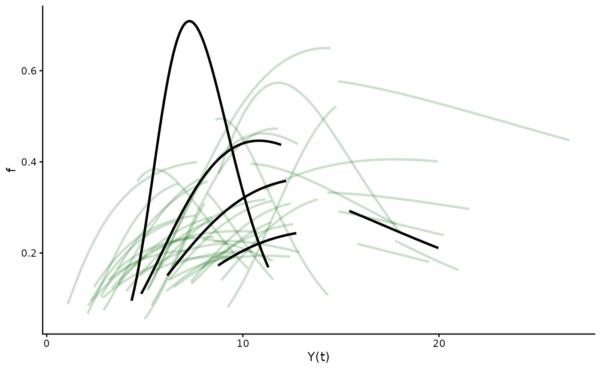

This vignette is intended for a statistical/mathematical audience who
are interested in Bayesian inverse problems. For biologists looking for
an applications-based walkthrough the other vignettes in this package –
hmde, constant-growth,
von-bertalanffy, and canham – are less
theoretical.
Getting started with {hmde}
‘hmde’ is under active development, you can install the development version of ‘hmde’ from GitHub with:
# install.packages("remotes")
remotes::install_github("traitecoevo/hmde")The Theory
The underlying method that the hmde package implements leverages the longitudinal structure of repeat measurement data to estimate parameters for an underlying differential equation, as first demonstrated in . This method is an example of a Bayesian inverse method for differential equation estimation: we are attempting to estimate the parameters of a chosen DE based on observations of the resulting process. We assume that the data consists of a finite number of discrete (likely sparse) observations with measurement error at the individual level, and have a set number of possible differential equations ready to be fit to data.
The Maths
In a general setting, we are interested in some quantity that changes over time (approximately) according to a chosen DE . We have some finite finite number measurements at times , and believe that the underlying true behaviour is given by for unseen parameter vector that we wish to estimate. We also have an initial condition .
We have three in-built growth functions in hmde.
Constant: chosen as when you only have two observations the average growth rate is the best you can do. Furthermore, the results from the constant model align with a linear mixed effects model for size with individual parameter. The constant model is size-independent. As all numerical methods are equivalent and the same as the analytic solution given the initial condition, we use the Euler method for the constant model.
von Bertalanffy: which has a history of use in biology for species that grow to some maximum size, and represents a simple size-dependent linear function. If a power law model is desired, log-transforming observations and then back-transforming by exponentiation gives such a function. Equation (2) is implemented with the analytic solution rather than a numerical method, as it is a known nightmare example for numerical stability due to the negative coefficient on .
Canham: which is considered a reasonable approximation of long term growth behaviour for some tree species as shown in and [Chapter 2]. Equation (3) is extremely non-linear and does not have an analytic solution, forcing the use of numerical methods in order to estimate the growth increments in Equation (1).
Affine: which is only included for demonstration purposes of where numerical methods can go wrong as it is a re-parameterisation of the von Bertalanffy model.
Choice of appropriate function is an exercise for the user and
depends on the available data. Aside from the affine model all have
versions that work with both a single individual, and multiple
individuals. We provide example data intended for use with each of the
primary models: - Trout_Size_Data for the constant model, -
Lizard_Size_Data for the von Bertalanffy model, -
Tree_Size_Data for the Canham model.
The Stats
We assume that we do not have access to or the true values of over time. Instead we have observations with measurement error, and estimate with .
We use a hierarchical structure to encode different levels of relationships within the data. At the bottom of the hierarchy is the measurement level where we assume normally distributed error. This may not always be true, but indicated that symmetric error centred at 0 may be enough for reasonable results. The longitudinal structure in Equation (1) serves as the next level, connecting estimated sizes over time based on the chosen function and estimated parameters , which operates at the level of the individual.
If the data has multiple individuals we add additional layers that
act as hyper-parameters on the distributions of elements of each
individual
’s
.
We build these to be independent
s,
with log-mean and log-standard deviation parameters
and typically use the following priors:
For details on the prior distributions
see the vignette for a specific model or check the Stan file. To see the
default values run hmde_model on the model name as a string
and look at the prior_pars argument for the parameter
name:
hmde_model("canham_multi_ind")
#> $n_obs
#> NULL
#>
#> $n_ind
#> NULL
#>
#> $y_obs
#> NULL
#>
#> $obs_index
#> NULL
#>
#> $time
#> NULL
#>
#> $ind_id
#> NULL
#>
#> $prior_pars_pop_log_max_growth_mean
#> [1] 0 2
#>
#> $prior_pars_pop_log_max_growth_sd
#> [1] 0 2
#>
#> $prior_pars_pop_log_size_at_max_growth_mean
#> [1] 0 2
#>
#> $prior_pars_pop_log_size_at_max_growth_sd
#> [1] 0 2
#>
#> $prior_pars_pop_log_k_mean
#> [1] 0 2
#>
#> $prior_pars_pop_log_k_sd
#> [1] 0 2
#>
#> $prior_pars_global_error_sigma
#> [1] 0 2
#>
#> $model
#> [1] "canham_multi_ind"
#>
#> attr(,"class")
#> [1] "hmde_object"The error parameter is assumed to operate at a global level independent of individual and typically has a Cauchy prior with location 0, spread parameter 2.
Estimation is done using MCMC through Stan.
Integration of time series
Numerical methods are required for the Canham model as it has no analytic solution, and the inbuilt Stan Runge-Kutta 4-5 solver is used.
For the von Bertalanffy model an analytic solution is used in order to avoid numerical problems. For the constant model all numerical methods are the same and give the same result as the analytic solution so Euler is used.
Demonstration: Canham Growth - Multiple Individuals
The provided tree data for 50 individuals takes a few hours to run.
As such, the following block does not run by default, and instead we
leverage the provided estimates data file: Tree_Size_Ests.
The estimates are posterior mean, median, and 95% central credible
intervals for parameters, and mean posterior estimates of sizes over
time based on the longitudinal model.
# Build fit and extract estimates
canham_multi_ind_fit <- hmde_model("canham_multi_ind") |>
hmde_assign_data(data = Tree_Size_Data) |>
hmde_run(chains = 1, cores = 1, iter = 1000)
Tree_Size_Ests <- hmde_extract_estimates(fit = canham_multi_ind_fit,
input_measurement_data = Tree_Size_Data)The following code produces plots of the Canham function for each individual between the first and last estimated size. The purpose of the plot is to look at how different individual growth functions behave.
summary(Tree_Size_Ests)
#> Length Class Mode
#> model 1 -none- character
#> measurement_data 5 tbl_df list
#> individual_data 13 tbl_df list
#> error_data 5 tbl_df list
#> population_data 5 tbl_df list
# Plot fitted growth function pieces
plot_par_individual_data <- Tree_Size_Ests$individual_data[,c(1, 2, 6, 10)] #Pull out estimates only
hmde_plot_de_pieces(Tree_Size_Ests) Each line represents 25 years of growth for the specific individual.
Lines that sit lower on the
-axis
are shorter horizontally because they are traversed more slowly, as
is the rate of change in
.
Each line represents 25 years of growth for the specific individual.
Lines that sit lower on the
-axis
are shorter horizontally because they are traversed more slowly, as
is the rate of change in
.
To understand the error model, the following code plots a number of
individual sizes over time, then super-imposes those growth curves in
black on the individual growth function plots. To view a specific
individual, use the ind_id value to select them.
#Plots of size over time for a sample of 5 individuals
sample_ids <- sample(1:nrow(Tree_Size_Ests$individual_data), size=5) %>%
sort()
plot_data <- Tree_Size_Ests$measurement_data %>%
filter(ind_id %in% sample_ids)
ind_size_lims <- Tree_Size_Ests$measurement_data %>%
filter(ind_id %in% sample_ids)%>%
group_by(ind_id) %>%
summarise(y_0 = min(y_hat),
y_final = max(y_hat))
ggplot(data=plot_data, aes(group = ind_id)) +
geom_point(aes(x = time, y=y_obs, colour = as.factor(ind_id)),
shape = 1) +
geom_line(aes(x = time, y=y_obs, colour = as.factor(ind_id)),
linetype = "dashed") +
geom_point(aes(x = time, y=y_hat, colour = as.factor(ind_id)),
shape = 2) +
geom_line(aes(x = time, y=y_hat, colour = as.factor(ind_id)),
linetype = "solid") +
labs(x="Time (years)", y="DBH (cm)", colour="Ind. ID") +
theme_classic()
#Load DE for Canham
DE_function = hmde_model_des("canham_multi_ind")
#Produce plot with focus inds
function_plot <- hmde_plot_de_pieces(Tree_Size_Ests,
alpha = 0.2)
for(i in 1:length(sample_ids)){
args_list <- list(pars=Tree_Size_Ests$individual_data[sample_ids[i],c(2, 6, 10)])
function_plot <- function_plot +
geom_function(fun=DE_function, args=args_list,
colour="black", linewidth=1, alpha = 1,
xlim=c(ind_size_lims$y_0[i], ind_size_lims$y_final[i]))
}
function_plot